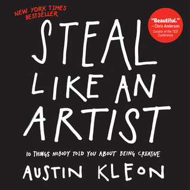

Book Details

Title: Steal Like an Artist
Author: Austin Kleon
Published: 2012
Category: Self Help
Status: Not Available
Description:
You don’t need to be a genius, you just need to be yourself. That’s the message from Austin Kleon, a young writer and artist who knows that creativity is everywhere, creativity is for everyone. A manifesto for the digital age, Steal Like an Artist is a guide whose positive message, graphic look and illustrations, exercises, and examples will put readers directly in touch with their artistic side.